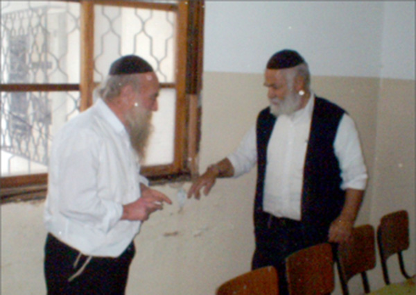

Massacre in Kfar Chabad
57 years have passed since that tragic night, Rosh Chodesh Iyar, when terrorists murdered five students and a teacher in the vocational school in Kfar Chabad. * Beis Moshiach brought two survivors of the attack to the spot and reviewed what happened – from the moment the lights went out, the shots and the screams, and the sad news from the hospital, as well as the Rebbe’s response.

Suddenly, the lights went out. Then the door burst open and a volley of shots rang out. Whoever was in the path of the door was hit. Shock. Chaos. Nobody knew what was going on. A body fell backward. Instinctively, the boys threw themselves down to the ground and found hiding places behind tables and chairs, but for some of them it was too late.
“I felt a big body fall on me in the dark,” recalls R’ Asher Kadosh, then a student in the vocational school and now a resident of Kfar Chabad. He closes his eyes and sits for some time, his fingers drumming on the table. It was precisely in that spot that he had stood during the attack over fifty years ago.
“It was the counselor, Simcha Zilberstrom who was killed on the spot. According to one version, there were three terrorists. One waited in the car, one pulled the fuses from the electrical box, and a third stood in the doorway of the shul and shot. Then the two of them ran to the car and fled. We found out these details only later on.”
What happened in the initial moments?
“Fear, terror,” responds R’ Asher slowly. “A moment of silence, of death, immediately followed by the screams of the wounded. Chaos ensued. Hysteria.”
“THERE WAS A BIG MIRACLE”
R’ Efraim Wolf, menahel of Yeshivos Tomchei T’mimim and Vocational Schools reported in a letter to R’ Binyamin Gorodetzky:
“One the eve of the second day of Rosh Chodesh Iyar, at about eight in the evening, the room for learning and prayer in Kfar Chabad’s agricultural school was attacked by fedayeen, terrorists who came from the Gaza Strip.
“About fifty students were in the room, most of them students of the agricultural school and a few from the vocational school, with their counselors – Simcha Zilberstrom hy”d and yblc”a Yeshaya Hopin (Gopin) and Meir Friedman. They were davening the Maariv Shmoneh Esrei.
“There was knocking at the door and when they opened it there were two terrorists. They did not go in but sprayed the room with bullets and left. The miracle was that they did not turn their weapons in all directions but just shot in front of them. There were many wounded in that line from the door to the wall; some of them immediately lay down on the ground, which is how they were saved.
“The lights went out when they began shooting, and there are different theories about it. Some think the murderers themselves removed the electric fuses in the hallway and some think that the force of the banging made the fuses fall out. In any case, this prevented a worse tragedy, for if there was light in the room, the murderers would have been able to see where people were located.
“On the spot, the following were severely wounded practically in all parts of their bodies: the madrich/counselor Simcha Zilberstrom, and the students Nissim Essis – from the vocational school; Peretz Moshe and Shlomo Mizrachi – arrived at the school that day from the Diskin school in Yerushalayim; Albert Edery, Amos Ozen, Binyamin Menasheh – arrived at the school that day from the Diskin school in Yerushalayim; Yosef Edery and Nissim Veknin. The latter was lightly wounded and was sent back to the school after being treated.”
R’ Meir Kadosh of Yerushalayim also remembers the cries of pain and fear:
“It is hard for me to describe the horror. There were screams from every side. The wounded cried and screamed in pain; others tried to flee and bumped into one another. There was bedlam. In the midst of all the noise I heard my brother calling my name. I answered him, but he continued to scream. I didn’t understand what had happened to him.”
R’ Asher looks lovingly at his younger brother:
“I tried to look for you,” he said to his brother, and then added the background. “We had left Morocco a few months earlier with the youth aliya, while our parents stayed behind. Right before we left the house, my mother asked me to watch over my brother who was two years younger than I am, only 11 years old. We arrived at the absorption center, and from there Simcha Zilberstrom took us to Kfar Chabad.
“I felt a tremendous responsibility to look out for you. I felt I had to locate you immediately. I shouted your name but did not hear a reply. In the darkness and chaos I made my way, trying not to touch the wounded and to go over the overturned chairs and tables. It is hard for me to describe how worried I was. I saw Meir Friedman light a match and by its weak light I saw him walk out with some children. I did not see you among them. I continued shouting, ‘Meir, Meir,’ but heard no response. I didn’t know what to think. I remembered where you had been standing for davening and went in that direction, step by step, until I got to your spot. I called your name again and that’s when I heard you answer.
“I had been worried and shocked, and I slapped you. I said, ‘Meir, you should be ashamed of yourself. I’ve been worried about you and I’ve been calling you and calling and my throat hurts already. Why couldn’t you answer that you were all right?’
R’ Meir: “But I answered! The boys around me heard me. I answered again and again but you continued screaming. I did not understand why you couldn’t hear me.”
R’ Asher: “I realized afterward that the bullets that had whistled past my ears had affected my hearing.”
“WE ALL TREMBLED IN FEAR”
A few moments later, R’ Shaya Gopin, one of the menahalim of the school, whispered to thirteen-year-old Kadosh, “Asher, take whoever remains here and go out the window and close yourselves in your room until I come to you.”
R’ Asher Kadosh: I was only thirteen and there were some other boys my age. We took a group of younger talmidim, including two who were critically wounded and quickly went out the window. From there we ran to the room I slept in.”
R’ Meir Friedman: I immediately began getting the children out. Over here (and he pointed to where the terrorists stood) is where they stood and shot anyone directly ahead of them. See, here is a scratch in the window from one of the bullets.”
R’ Meir Kadosh: It is hard for me to remember all the details from those frightening moments. I remember that Meir Friedman broke the window so we could get out and he transferred the wounded out the window to the older talmidim. We were ten to twelve talmidim. We ran to our room. We blocked the door with a table and chairs. We lay the wounded on the mattress and we all sat on the floor.
“The wounded cried in pain and we young children begged them to stop crying out loud. We were afraid that the terrorists were still on the property and the boys’ cries would reveal our whereabouts. We sat silently in the room for a long time, trembling in fear and shuddering over the suffering of our wounded friends who were crying out in their pain.
“After a long time, we saw colored lights blinking. One of the talmidim dared to raise his head to the window and he said he saw many police cars. We were still afraid to go out and remained seated on the floor, waiting tensely for someone to come and get us.”
R’ Asher: “R’ Meir Simcha Chein, then a talmid in the carpentry school, was the one who came. He didn’t know which room we were hiding in and he shouted to us. I recognized his voice because there was a good relationship between the students of the agricultural school and the students in the carpentry school. We shouted out to him and within minutes he had located the room we were in.
“We opened the door and there were policemen, soldiers, and doctors. They immediately removed the wounded and began a security and medical check of all the talmidim. They wanted to know what happened during the shooting and also wanted to ascertain which talmidim had been wounded. I complained about my hearing which had already begun to improve since the shooting, and after examining me, the doctors said that within a few hours my hearing would be restored.”
R’ Meir Friedman: “I took out a lot of children from the area of the agricultural school and brought them to R’ Shlomo Chaim Feldman’s house which was opposite the school. Then, together with Shaya Gopin and others, we made a supreme effort to get the wounded out, especially my friend Simcha Zilberstrom, who had absorbed many bullets and was in critical condition.
“I walked to the center of the Kfar where many people had already congregated since they had heard gunshots, but they were afraid to go closer to the school; maybe the terrorists still lurked.
“In the meantime, Simcha kept bleeding. It took time until we got hold of the weapons that were in the Kfar and were able to remove the wounded. The hardest moments for me that night were when I dragged Simcha on my own and he bled all over me. I couldn’t help him. In the end, R’ Rivkin came with his car, the only vehicle in Kfar Chabad, and we went together to Tzrifin hospital where I stayed with him for a few hours. I left only when they took him into the operating room. Simcha did not survive the operation.”
That terrible night, another three wounded died: Nissim Essis, Peretz Moshe, and Shlomo Mizrachi, may Hashem avenge their blood. The next night, Albert Edery died. Amos Ozen died a while later. Five talmidim and their madrich were the bloody cost of that awful night.
PAINFUL RETURN
R’ Meir Kadosh: “I was only 11 and it was the first time in my life that I was hearing gunshots. I saw people who were seriously wounded and was extremely frightened. The staff of the school decided that the talmidim could not spend the night there and they sent us to homes in the Kfar.
“I, my brother, and two other talmidim, were guests of Mrs. Gita’le Friedman, the mother of Meir the madrich. She calmed us down and hosted us with her characteristic warmth. She offered to leave a light on in our room so we wouldn’t be afraid, but we were terrified regardless. The horrifying scenes came back to us again and again. It was only towards morning that exhaustion overcame us and we slowly fell asleep.”
R’ Asher: “In the days that followed, there were boys who wanted to leave the school. I also considered leaving and moving to live with my uncle, but he explained to me that leaving the school would be a victory for the terrorists and that was their goal. He convinced me and I decided to continue at the agricultural school.
“It was two or three days later that we dared go back to the place for the first time. It was when the chief rabbis of Eretz Yisroel, R’ Yitzchok Isaac Herzog and R’ Nissim, came – each one separately – to visit us and encourage us. In the pictures that were publicized after R’ Herzog’s visit, you see me telling him about the massacre.
“We slowly got back to our routine. It took a long time before we dared to stay in the vicinity of the school even during the daytime, and even then, we couldn’t learn. We wandered around in shock.”
R’ Meir Kadosh: “In the period after the attack, we attended the funerals and visited the wounded. I particularly remember going to see Amoz Ozen who lay unconscious for a long time. His parents, who were in Tunisia, were brought to Eretz Yisroel with the help of the Jewish Agency and Chabad. He died shortly after they arrived.”
TALMIDIM LEAVE
The period after the massacre was very difficult. Many of the talmidim wanted to leave. There were also talmidim in Yeshivas Tomchei T’mimim in Lud who were away for the Bein HaZ’manim intersession, and their parents said they wouldn’t send their children to yeshiva because they were afraid for their lives. The yeshiva in Lud, like Kfar Chabad, was also situated among orchards from where it was easy for terrorists to infiltrate. The day after the massacre it was suggested that the yeshiva be moved from Lud to Tel Aviv or B’nei Brak.
This wasn’t the first time that terrorists had attacked Chabad Chassidim. A year and a half earlier, Yisroel Aryeh Dubroskin left the yeshiva in Lud and walked through the orchards in the direction of Kfar Chabad where he was a mashpia in the vocational school. He did not arrive at his destination that night. His body was found a few days later. He was also killed by terrorists who shot him.
R’ Efraim Wolf, in the letter referred to earlier, expressed his concerns about a mass defection of talmidim from Kfar Chabad and Lud.
“We don’t know how things will work out at the vocational school since only a few talmidim have returned thus far. The same is true for the yeshiva in Lud. Many of the talmidim have not returned yet, probably because of what happened. It looks like many talmidim have left the agricultural school.
“Seventeen parents and relatives of talmidim came to the school and took them back home with them. They said they were not removing the children from the school, but were only taking them for a few weeks until they calmed down. Nineteen talmidim remain in the school.
“What can we say? We don’t know what to do. We are waiting for instructions from the Admur shlita.”
THE REBBE IS ENCOURAGING
At that time, the idea was suggested of announcing a short fast on Thursday, when the Shiva would be over for the first to have died in the massacre. On Sunday, 4 Iyar, the Rebbe sent a telegram to R’ Shneur Zalman Garelik, the rav of Kfar Chabad, with instructions regarding the fast:
The fast on Thursday until after midday is for healthy adults. It is proper for all healthy adults in all Chabad mosdos chinuch and yeshivos in Eretz Yisroel to do so.
May Hashem watch over each and everyone as the Alter Rebbe says, the attribute of rachmanus is greater than the attribute of chesed, “an unlimited inheritance.”
Three days later, the Rebbe sent two additional telegrams. The first was addressed to:
All of Anash, residents of Kfar Chabad, the mosdos there, and especially the vocational and agricultural schools, the talmidim, the teachers, the principals, the askanim, and parents.
In this telegram, the Rebbe encouraged them to expand the mosdos and to overcome the obstacles. The second telegram was addressed to the yeshiva in Lud. The Rebbe instructed them to start building a new yeshiva building. At the same time, the talmidim in the yeshiva in Lud should continue to sleep in Pardes but with protection.
Regarding moving the yeshiva from Lud, the Rebbe sent letters to the leaders of Aguch in Eretz Yisroel, including R’ Eliezer Karasik. In one of them he wrote:
… If in every location, the Guardian of Israel does not slumber or sleep, all the more so in Kfar Chabad which was founded by my father-in-law, the Rebbe, Nasi Yisroel, the one who runs it now too. And this is the case with Yeshivas Tomchei T’mimim in Lud … I don’t come to frighten anyone, G-d forbid, but the most protected place now in Eretz Yisroel is Kfar Chabad. You have permission to publicize my view to whomever you see fit, including Anash.
In response to the massacre, the Rebbe asked the leaders of Kfar Chabad and the askanim to expand Kfar Chabad and to continue developing and building in it.
At the conclusion of the Shloshim there was a memorial service with a groundbreaking for a building, which would house the printing department. It was called “Yad HaChamisha” in memory of the five students who were murdered. In order to raise money for the building, a committee was formed, comprised of rabbanim and public figures.
R’ Asher and R’ Meir Kadosh say that the Rebbe’s words gave much encouragement to the students and parents, with a decisive majority of talmidim electing to stay in Kfar Chabad.
On the second day of Shavuos the Rebbe spoke at a public farbrengen about those who explain why the massacre occurred:
There is no need to be daunted by any tests, big or small, especially the most recent test. There are those who want to explain it according to the idea of “I will be sanctified with My close ones,” but the truth is this is not the explanation, and as it says there, “and Aharon was silent.” The proper understanding of what it means “being sanctified with My close ones” is also not something that we know, and to explain one inexplicable thing with another inexplicable thing is worthless consolation. And Aharon was silent.
It is certainly forbidden to second-guess G-d, but that does not mean that the matter itself is rationally understood. For now, I have not found an explanation for this, but what is certain is that from this “double strength” will come.
At the farbrengen, the Rebbe asked that each of the Chassidim who lived outside Eretz Yisroel should participate in supporting Kfar Chabad with his soul, body and money, by learning additional Chassidus and acting according to the ways of Chassidus and by donating money.
A short time later, the Rebbe sent a group of shluchim to Eretz Yisroel whose job it was to strengthen Kfar Chabad and Yeshivas Tomchei T’mimim in Lud, and in general to raise the spirits of the Chassidim in Eretz Yisroel.
During the fifty plus years since then, have you reflected on what happened?
R’ Meir Friedman: I’ve gone through worse things since then, when I fought in the Six Day War and the Yom Kippur War. In any case, the images are engraved in my mind and I often think of that horrible massacre.
R’ Meir Kadosh: After the tragedies that occurred during Israel’s wars and the terrorist attacks, I am asked as a mechanech to tell the students about what I experienced in my childhood. When I do, I stress what the Rebbe said after the attack. He encouraged us and asked us not to leave the school. I repeat to them what I heard as a rumor that when the massacre occurred, the Rebbe stayed in his room and cried.
“I add the words of encouragement from R’ Nissim when he visited us after the tragedy. He said, ‘In order to be victorious over the evil ones, you need to continue learning and being involved in Torah and mitzvos.’”
MIRACULOUSLY, I WASN’T THERE
R’ Avrohom Matouf was a teacher in the agricultural school. He taught Gemara and Limudei Kodesh.
“I arrived in Kfar Chabad on the afternoon of the first day of Rosh Chodesh Iyar, and planned on sleeping in the Kfar in order to begin teaching the next morning. I spoke briefly with Shaya Gopin and Simcha Zilberstrom and went to my room in order to prepare the material that I thought I would teach the next day.
“After I finished preparing a daf Gemara, I went to Gita’le’s kiosk to get a soda, and from there I planned on going back to the school in order to daven Mincha and Maariv with the talmidim. On the way, I met a friend from Tirat Yehuda who worked in Kfar Chabad. He was also going to sleep that night in the Kfar, but then he decided to go home and he asked me to join him.
“On the spur of the moment I changed my plans and took the bus with him. That is why I wasn’t present at the massacre. It was only the next morning, when I was in the Tel Aviv central bus station on my way to Kfar Chabad, that I heard that terrorists had entered Kfar Chabad. I immediately went over to the newsstand and was shocked to see the headline which said that the madrich Simcha Zilberstrom was critically wounded. I continued reading what happened, and when I got to the last page I was horrified to read that the madrich had died of his wounds during the night.
“I arrived at Kfar Chabad and found out that some talmidim had been killed. I knew them all personally and was in shock.”
Berger. "Massacre in Kfar Chabad." Beis Moshiach, no. 875 (April 10, 2013).